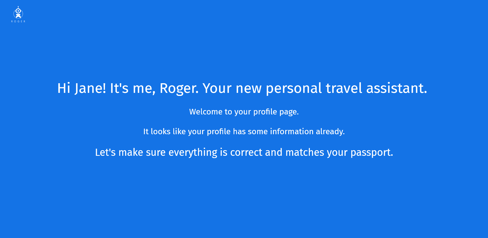
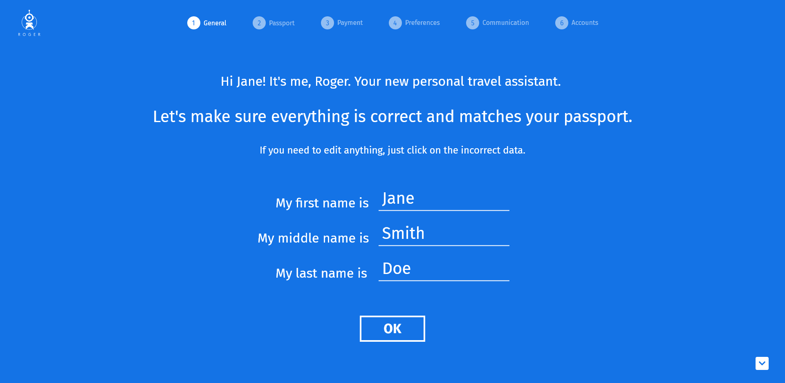
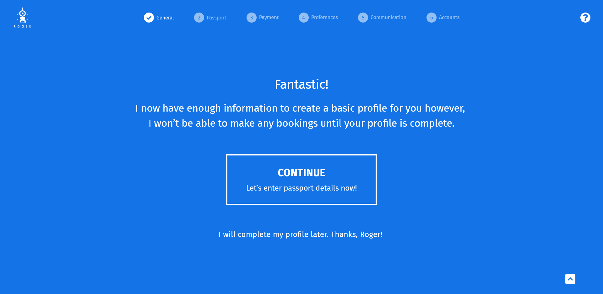

OK Roger is a personalized and proactive virtual travel assistant for road warriors, developed using a combination of AI and a network of expert humans.
My goal was to reconstruct the internal functionalities of the user profile, focusing on the first user's input from the information obtained by the bot in Slack.

Once the user is in, we have to make sure all the information collected is correct.

We also need to give users the possibility to complete their entire profile through this guided and minimalist questionnaire or if they prefer to go to a more traditional profile page

Speaking of the more traditional version, here are demos of some of the requested sections.